Stories in Pure Nutrition & Craft.
Practical nut butter guides, ingredient know-how and serving ideas from the NJOY Journal. Crafted for everyday kitchens.
Everyday nut butter know-how.
Practical guides for choosing, serving, storing and sharing your favourite jars.

Buying Peanut Butter in India: A Practical Comparison Checklist
Compare peanut butter in India by ingredients, texture, serving size and price per 100g, with a practical checklist for buying online.
4 min read · Read guide →Smooth or Crunchy Peanut Butter? Choose by How You Cook
Choose smooth or crunchy peanut butter for toast, sauces, oats and baking. Learn how texture changes a recipe without assuming nutrition differences.
4 min read · Read guide →Oil on Top of Peanut Butter? A Guide to Stirring and Texture
Understand natural peanut butter oil separation, learn a tidy stirring method and know why appearance alone cannot establish freshness or safety.
4 min read · Read guide →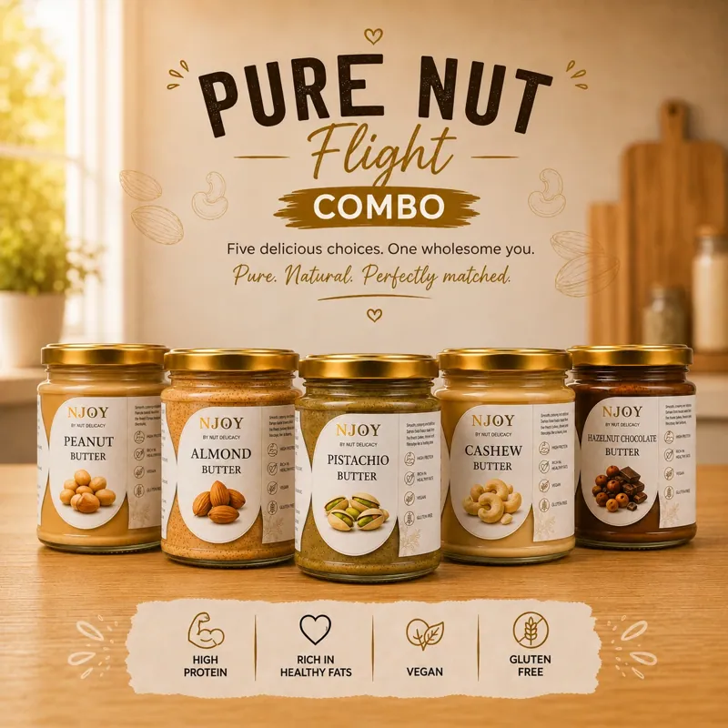
Plain or Flavoured Nut Butter? Build an Ingredient Wishlist
Choose plain or flavoured nut butter by your recipes and ingredient preferences. Compare sugar, salt, oils and allergens without relying on slogans.
4 min read · Read guide →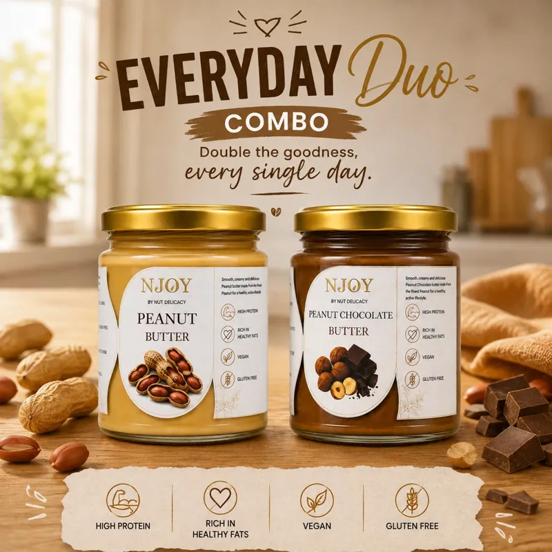
Better Peanut Butter Toast: Five Ways to Balance Every Bite
Make peanut butter toast with five simple topping ideas, from banana and cinnamon to savoury lime, plus tips for a crisp base and balanced texture.
4 min read · Read guide →Almond Butter vs Peanut Butter: Flavour, Uses and Everyday Value
Compare almond butter and peanut butter by flavour, recipe use, portion and value. Choose an everyday spread without assuming one nut is always better.
4 min read · Read guide →Pistachio Butter Beyond Toast: Sauces, Fruit and Simple Desserts
Use pistachio butter in savoury dressings, fruit plates and simple desserts. Learn to adjust a small portion and keep the original jar unchanged.
4 min read · Read guide →Peanut Butter Protein: Work Out What Your Portion Provides
Calculate peanut butter protein from the nutrition label and your weighed portion. Understand serving sizes without muscle, weight-loss or fitness promises.
4 min read · Read guide →Storing Nut Butter in an Indian Kitchen: A Simple Jar Routine
Plan nut butter storage around the jar's label, clean handling and purchase quantity. NJOY butter shelf life is 2 months; check your pack's dates.
4 min read · Read guide →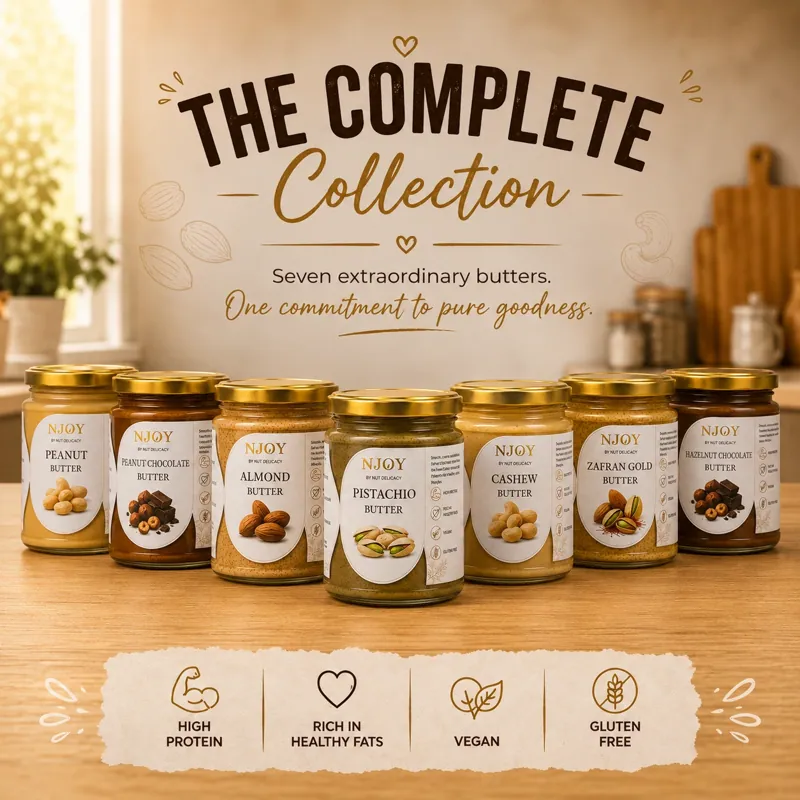
Diwali Gift Hampers for Teams: A Corporate Ordering Checklist
Plan Diwali corporate gift hampers with a clear brief for quantities, nut butter selection, greeting cards, delivery and quote approval.
4 min read · Read guide →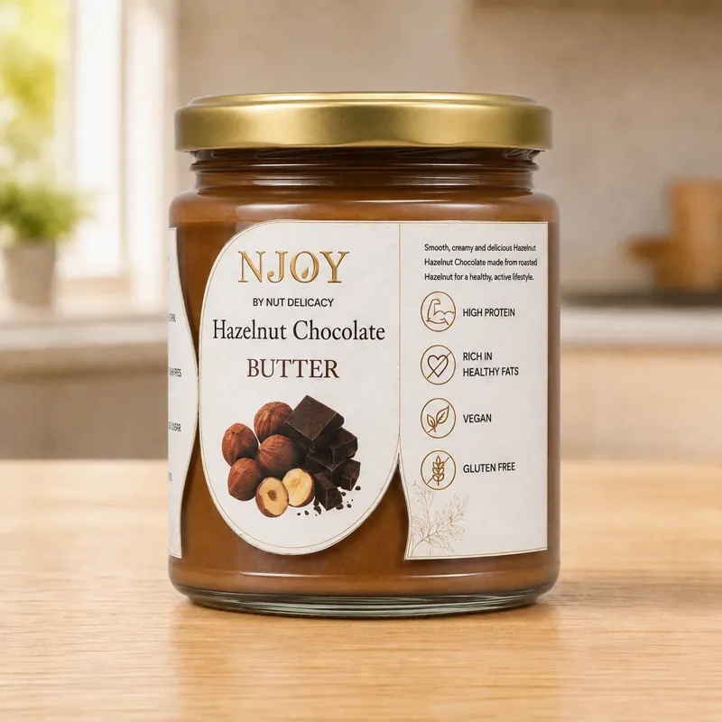
Chocolate Nut Butter Pairings: Choose the Nut, Then the Dessert
Pair peanut, hazelnut, almond and cashew chocolate nut butters with fruit, toast and simple desserts. Check the recipe before making dietary assumptions.
4 min read · Read guide →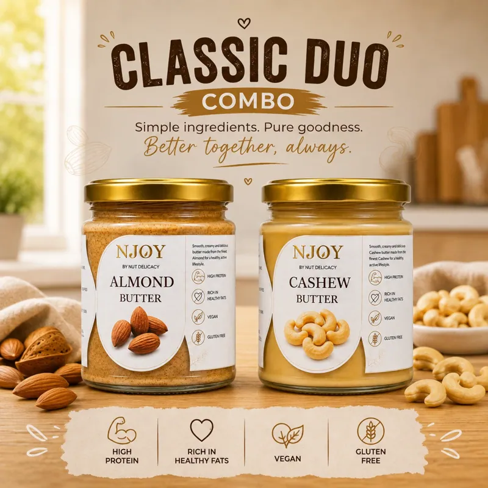
After the Last Spoonful: Practical Ways to Reuse Nut Butter Jars
Plan a second use for empty nut butter glass jars, reduce unnecessary gift packaging and check local recycling rules without broad sustainability claims.
4 min read · Read guide →
What Is Pistachio Butter? The Connoisseur's Complete Guide
Explore the culinary art of 100% pure stone-ground pistachio butter: origin terroir, health benefits, and how to use it in luxury breakfast dishes.
Pistachio Butter vs Peanut Butter: Which Is Healthier?
A detailed head-to-head comparison in protein, healthy fats, antioxidants, calories, and culinary versatility.
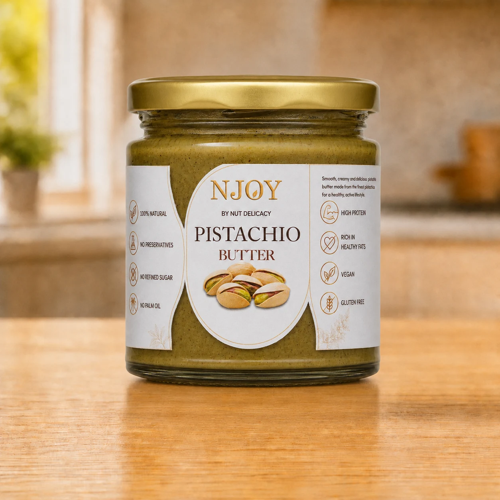
What Does Stone-Ground Nut Butter Mean? The Granite Ritual
Why traditional granite stone-milling below 28°C protects nutrients, texture, and natural roasted aroma.

The Connoisseur's Guide to Pure Almond Butter & Mamra Almonds
How stone-ground Mamra almonds deliver essential Vitamin E, magnesium, and sustained cellular energy.
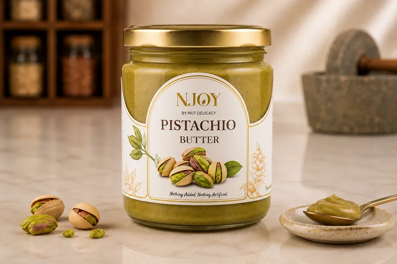
Why Zero Palm Oil & No Added Sugar Matter in Nut Butters
The truth about commercial additives and why whole stone-ground nuts are vastly superior for your heart.
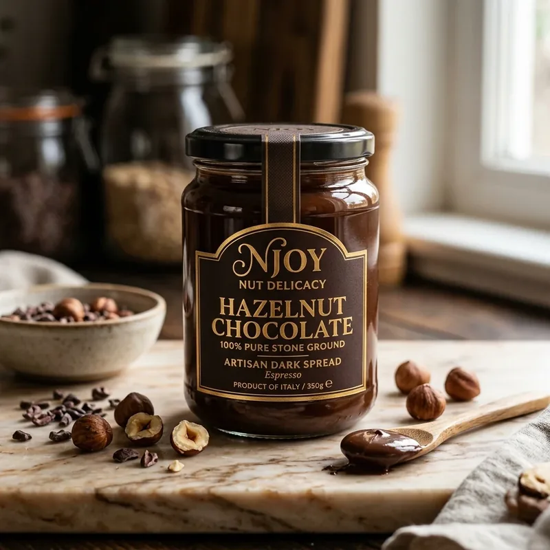
7 Gourmet Breakfast & Toast Ideas with Artisanal Nut Butters
Elevate your morning ritual with chef-inspired recipes for pistachio sourdough, chia parfaits, and gianduja crepes.
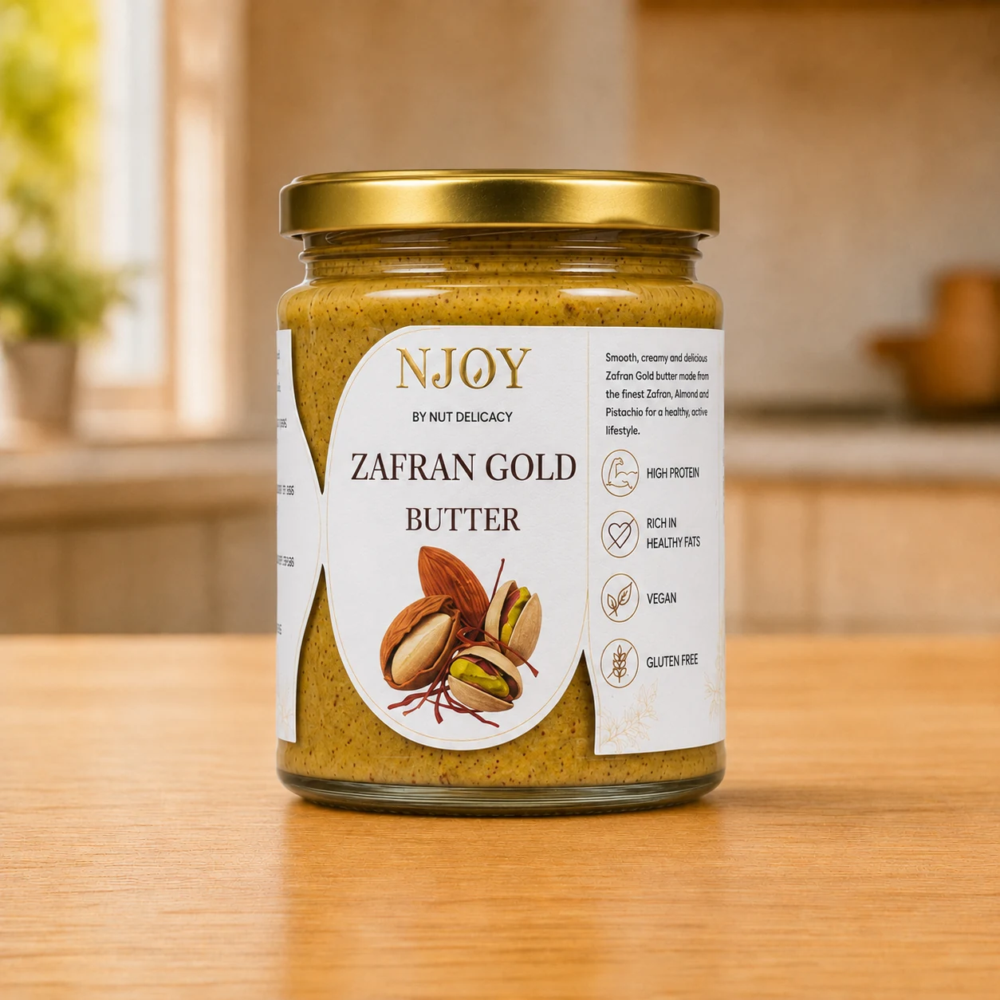
Istifada Ilmiya 1448: A Gathering of Knowledge
Learn about Istifada Ilmiya 1448, the significant educational seminar and knowledge-gathering event for the Dawoodi Bohra community.
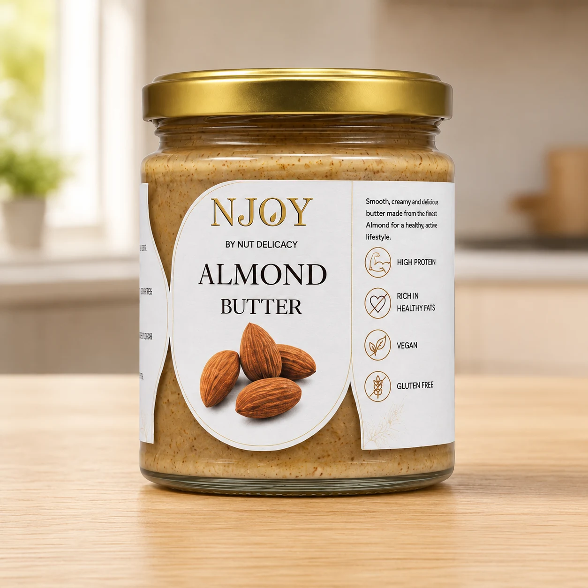
What is the Healthiest Nut Butter for Weight Loss?
Struggling to choose the right nut butter for your diet? Learn which nut butter is the healthiest for weight loss.
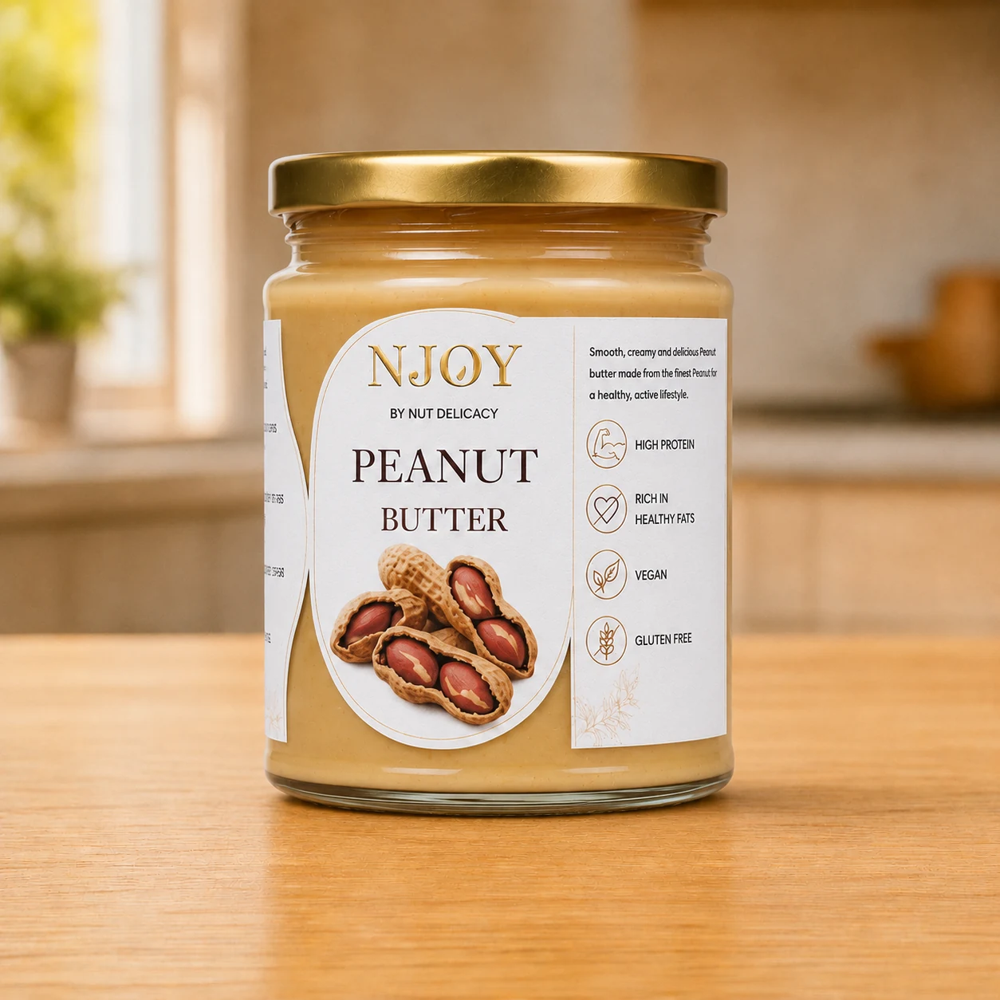
How to Read Nut Butter Labels for Hidden Sugars & Oils
Learn how to decipher nut butter nutrition labels. Discover the hidden sugars, palm oil, and preservatives.